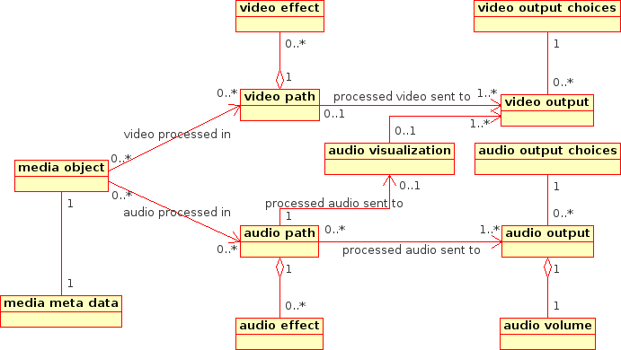

KDE needs to integrate better into existing Multimedia solutions for Linux.
Currently many KDE apps use aRts as media framework and soundserver, while other apps use mplayer, xine and/or gstreamer to do what they need. Sometimes this results in mutually exclusive usage of the soundcard and generally it's an unneeded overhead.
KDE Developers should be able to "natively" use multimedia functions in the KDE API. The KDE Mulitmedia API (short kdemm) should provide an easy to use and Qt/KDE API like aproach to multimedia functionality.
Nowadays when a KDE developer wants to add multimedia functionality to his program he can either choose one framework to do it, write all the media code himself (nobody does this, and probably nobody should) or use an abstraction to be able to use more than one framework. Most of the time the development models (object model, programming language) are not the same as a KDE developer is used to. And very often the API of the framework used is more complicated than the task he wants to accomplish. The kdemm API should be useable without any knowledge about media frameworks and how these things work internally.
The API does not aim to be a general Linux solution to multimedia. It aims to be the solution for all KDE developers.
KDE should ease the use of pro audio tools on Linux and provide the necessary configuration and integration so that for pro audio tools the DE of choice is KDE.
| Description | Administrates a KDE installation. Most users are their own admins... |
| Initiated User Tasks | configure Multimedia sytems |
| Initiated Use Cases | Configure kdemm |
| Description | The average KDE Developer who might need some multimedia functionality, like playing a media object, for his program. |
| Initiated User Tasks | add media playback to his program |
| Initiated Use Cases | add media playback functionality to a program, initialize kdemm |
| Description | KDE Developer writing a media application like a jukebox or full-featured media player. |
| Initiated User Tasks | Develop Media Player |
| Initiated Use Cases | media playback, manage video window, modify audio path, play media object, load media object, create reusable audio path, crossfading |
| Description | User of the K Desktop Environment. |
| Initiated User Tasks | change audio output volume |
| Initiated Use Cases | change audio volume |
Actor Admin initilizes the following user tasks
| Description | His aim is to make all multimedia applications work happily side by side. He has several options to select, like the audio driver backend to use OSS or ALSA, whether he wants to have a soundserver running and what application uses what audio output. He can set the video output method, like e.g. xv or SDL or plain X. This has to be done so that applications don't block each other and sometimes to make them interact with one another (like you can do with soundservers). It is important to have it correctly configured else the user will have problems whenever he uses multimedia programs. This configuration has to be done once until a new program is installed that is incompatible with the setup. Ideally this task has to be done once and never again. |
| Realized in Use Cases | Configure kdemm |
Actor KDE Developer initilizes the following user tasks
| Description | The average KDE Developer might want to add media playback functionality to his program, meaning that his program will be able to play a sound file or even video file. He can select from a lot of choices how to achieve his goal. - write the relevant audio/video code himself - select and use a media framework like gstreamer or aRts - use existing code from kdelibs (might not be enough for what he's trying to do) A lot of programs nowadays need to have multimedia functionality. It's important that KDE developers can add multimedia functionality to their programs. |
| Realized in Use Cases | add media playback functionality to a program |
Actor KDE Multimedia Developer initilizes the following user tasks
| Description | Aim: The developers aim is to write a full featured media player like mplayer, xine, all the frontends for the former, windoze media player :-P, realplayer, you name it. Options: He can choose from a variety of available code, like NMM, gstreamer, aRts to a certain extend, mplayer or (lib)xine to provide for his multimedia needs. He can choose how to output the audio and video as far as the former choice gives him options. There are constraints on what media formats he can play or what he can do with the data depending on his choice of media backend/framework. Reason: A modern desktop environment needs to have a modern media player with all the latest bells and whistles. Priority: It is important that KDE has "native" media players. Info-In: - knowledge about what other media players can do - features asked for by users (e.g. EQ is a must have for some users) |
| Realized in Use Cases | media playback, manage video window, modify audio path, play media object, load media object, create reusable audio path, crossfading |
Actor KDE User initilizes the following user tasks
| Description | The user wants to change the volume of some program because it is too loud compared to the sound of another program. This is a tricky task for the user if the program itself doesn't allow to attenuate its sound. If it does he can use the volume control of the program. If it doesn't he has to use a soundserver that allows him to use a volume control for this one specific program only. It is rather important to have this functionality as it can become pretty anoying if you e.g. want to get notifications when people are chatting with you while you're listening to classical music. The notifications really need attenuation. It might happen a few times a day that a user needs this functionality. |
| Realized in Use Cases | change audio volume |
When I say "sent" in the diagram below I'm actually talking about the data flow in the underlying media framework. kdemm only creates connections so that the data flow is done by the framework.
| Network transparency | It must be possible to run the desktop over the network, not only the GUI, but also audio output. If it is possible, the system should try to play the audio on the computer where the GUI is shown by default. |
When reading the use cases keep in mind that the user often is the Application Developer. So the actor steps are steps the application written by the developer does.
| Initiating Actor | KDE Developer | |
| Preconditions | the kdemm API has been initialized without errors (see use case "initialize kdemm") | |
| FlowSteps | Actor | System |
| Tell kdemm what media object you want to play back. | ||
| Check whether the media object is one of the known types that the backend can decode. If it cannot be decoded error out. | ||
| Prepare for being asked to play back the media object, to seek in it or other operations. | ||
| a) Ask for meta information of the current media object. (e.g. length, bitrate, etc.) --> go on with step 5 or b) asking kdemm to play the media object --> go on with step 7 | ||
| read out meta information, either using the media backend if it supports this function, or using other external libs | ||
| display meta information on the GUI while asking kdemm to play the media object | ||
| Tell media backend to start playing. | ||
| Wait for notification that the media object has finished playing. Remove display of meta info and clean up all used datastructures. |
| Initiating Actor | KDE User | |
| Preconditions | a kdemm using program (let's call it A) is running with its volume being x | |
| FlowSteps | Actor | System |
| open KDE Mixer Window | ||
| look for all available volume controls and show them (with informative description what control does what) to the user | ||
| locate the control for A and move the fader down | ||
| decrease the output volume of A | ||
| Postconditions | A is running with output volume y < x |
| Initiating Actor | Admin | |
| Preconditions | KDE is installed and the backends the Admin wants to use are installed. | |
| FlowSteps | Actor | System |
| open kdemm admin tool | ||
| kdemm looks for available options (media frameworks and their output options) and presents these options in a view (see glossary). One framework is already selected as KDE default and kdemm does a good guess (based on audio driver) on what should be the default audio output option. For the selected media framework there might be more options that need to be shown. Also if the audio output choice has configuration options they get shown. (e.g. jackd has a lot of options that are more or less important to the admin) | ||
| select another media framework | ||
| Change audio output options according to what the framework supports. Provide access to the configuration options of the just selected media framework. | ||
| take a look at media framework config options | ||
| show media framework config options (e.g. NMM might show some network related options here) | ||
| tweak a few settings | ||
| write config out so that programs using kdemm behave like configured | ||
| change default audio output | ||
| Set the media framework to use the specified audio output. Provide access to the configuration options of the newly selected audio output. | ||
| save settings and close admin tool | ||
| write out all configuration and tell all kdemm programs to use the new configuration |
| Initiating Actor | KDE Multimedia Developer | |
| Preconditions | the kdemm API has been initialized without errors (see use case "initialize kdemm") | |
| FlowSteps | Actor | System |
| Ask kdemm for an "audio path" | ||
| Create a representation for the flow graph audio normally takes from the media object to the output and return an interface to it. | ||
| Ask for a list of effects that can be inserted into the audio path. | ||
| Look what effects the media framework supports and return a list that describes those effects (1. information for the end-user, 2. info that a computer program can recognize and identify, 3. unique identifier for the effect) | ||
| Create list of effects and let the user decide what effects he wants. Tell kdemm to insert effects into the audio path. | ||
| Prepare an audio path with the selected effects for later use. | ||
| optional steps: The user decides to configure the parameters of one effect. | ||
| Return a Widget showing the parameters the effect has so that the user can configure the effects. | ||
| Ask kdemm to save the state of the current audio path to a configuration object. | ||
| Look at current audio path, the contained effects and the parameters of the effects. Write those values in the configuration object. | ||
| load media | ||
| Tell kdemm to use the above audio path for the media object. | ||
| Change flow graph of media framework to use the selected audio path. | ||
| play |
| Initiating Actor | KDE Multimedia Developer | |
| Preconditions | the kdemm API has been initialized without errors (see use case "initialize kdemm") | |
| FlowSteps | Actor | System |
| Ask kdemm to send a notification 3 seconds before a media object finishes playing. | ||
| tell "notification system" from the media framework if it has one, else start a timer that checks for the end of playback to send the notification | ||
| take from playlist | ||
| Insert a "Fader" effect into the audio path of the media object | ||
| Change flow graph of the media framework to include the "Fader" effect. | ||
| play | ||
| take from playlist | ||
| Insert a "Fader" effect into the audio path of the media object | ||
| Change flow graph of the media framework to include the "Fader" effect. | ||
| When notification arrives tell the Fader of media object 1 to fade out in 3 seconds. Tell the Fader of media object 2 to fade in in 3 seconds and start playing media object 2. |
| Initiating Actor | KDE Developer | |
| Preconditions | KDE and all its libraries are installed correctly. | |
| FlowSteps | Actor | System |
| ask kdemm to initialize | ||
| Look at config set by the admin tool and accordingly load the media framework code and initialize an audio output that is at this point already available for the kdemm mixer API. | ||
| Postconditions | kdemm is initialized and ready for action |
| Initiating Actor | KDE Multimedia Developer | |
| Preconditions | the kdemm API has been initialized without errors (see use case "initialize kdemm") | |
| FlowSteps | Actor | System |
| Tell kdemm to load a media object. | ||
| Prepare media framework for working with the media object (play, seek, etc.). | ||
| Postconditions | Media object is ready for use. |
| Initiating Actor | KDE Multimedia Developer | |
| Preconditions | the kdemm API has been initialized without errors (see use case "initialize kdemm") | |
| FlowSteps | Actor | System |
| Ask kdemm for a dedicated video widget. | ||
| Create widget and keep reference to it for so that all video output at some later point can be displayed in this widget. | ||
| optional step - can be inserted at any point from here on: | ||
| Resize video widget (might also be fullscreen display). | ||
| Adjust for new video output size: video needs to be scaled to fit into the widget. | ||
| Ask for available video ratio options. | ||
| Ask media framework for available video ratio options. If the media framework doesn't provide any options Mark the currently used option. | ||
| Select one of the ratio options. | ||
| Change video ratio. |
| Initiating Actor | KDE Multimedia Developer | |
| Preconditions | the kdemm API has been initialized without errors (see use case "initialize kdemm") | |
| FlowSteps | Actor | System |
| Tell kdemm to send a notification whenever a media object is about to finish playing. | ||
| tell "notification system" from the media framework if it has one, else start a timer that checks for the end of playback to send the notification | ||
| Take first media object from the playlist | ||
| play | ||
| When notified that the playback is about to end | ||
| When notified that the playback has finished |
| Initiating Actor | KDE Multimedia Developer | |
| Preconditions | the kdemm API has been initialized without errors (see use case "initialize kdemm") | |
| FlowSteps | Actor | System |
| load | ||
| Ask for "audio path" of the media object. | ||
| Prepare for changing the flow graph of the audio going from the media object to the default output. Return a reference to an object that can be used to modify the path the audio takes. | ||
| Ask for a list of effects that can be inserted into the audio path. | ||
| Look what effects the media framework supports and return a list that describes those effects (1. information for the end-user, 2. info that a computer program can recognize and identify, 3. unique identifier for the effect) | ||
| Select an effect and tell kdemm to insert it into the audio path (the position can also be specified) | ||
| Change audio flow graph of the media framework to include the selected effect at the specified position. | ||
| play with effect |
| Initiating Actor | KDE Multimedia Developer | |
| Preconditions | a media object has been loaded (include use case "load media object") | |
| FlowSteps | Actor | System |
| Ask kdemm to play the media. | ||
| Instruct the media framework to play. |
| Description | Check whether the media data can be accessed and decoded. If not return an error indicating the problem. Use the underlying media framework to create a flow graph for reading and decoding the media data. (If the media framework does not support reading data from a remote location an extension has to be created that can use KIO to read the data.) Create an object to represent the media data. |
| Inputs | URL to the media data |
| Outputs | media object |
| Used in Use Cases | load media object |
| Description | two cases:
if( The media framework can produce the notification in question ) { Initialize notifications from media framework and prepare to forward them. } else { Use timer to send ticks and check for end of media playback. } |
| Inputs | - time before media playback ends
- time between ticks - what notifications to enable/disable (choices are: ticks, aboutToEnd, end) |
| Used in Use Cases | media playback, crossfading |